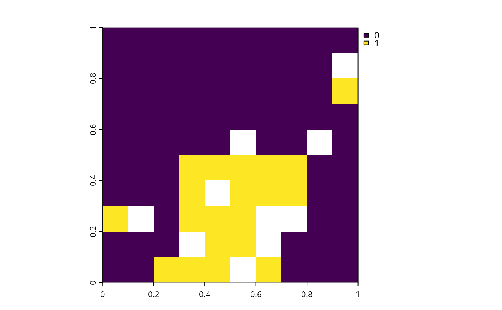

Linearly rescale a matrix. Specifically, the values in the matrix are rescaled so that the maximum value in the matrix is equal to a new user-specified maximum value.
Arguments
- x
matrix,array,Matrix::Matrixobject.- max
numericnew maximum value in matrix. Defaults to 1000.
Value
A matrix, array, or Matrix::Matrix object.
The returned object is the is the same class as the argument to x.
Details
This function is particularly useful for rescaling data prior to
optimization to avoid numerical issues.
For example, boundary length (e.g., generated using boundary_matrix()) or
connectivity data (e.g., generated using connectivity_matrix()) can
contain very large values (e.g., values greater than 1,000,000)
and such large values can, in turn, degrade the performance of
exact algorithm solvers (see Details section in presolve_check() for
more information on numerical issues).
By using this function to rescale boundary length or connectivity
data prior to optimization (e.g., before using add_boundary_penalties() or
add_connectivity_penalties(), this can help avoid numerical issues
during optimization.
See also
See boundary_matrix() and connectivity_matrix() for details on
creating boundary length and connectivity data.
Also, see presolve_check() for information on numerical issues.
Examples
# \dontrun{
# rescale_matrix() is especially useful for re-scaling boundary length data
# prior to optimization, and so here we provide an example showing how
# this can be accomplished
# set seed for reproducibility
set.seed(500)
# load data
sim_pu_raster <- get_sim_pu_raster()
sim_features <- get_sim_features()
# compute boundary data
bd <- boundary_matrix(sim_pu_raster)
# re-scale boundary data
bd <- rescale_matrix(bd)
# create problem with boundary penalties
p <-
problem(sim_pu_raster, sim_features) %>%
add_min_set_objective() %>%
add_boundary_penalties(0.01, data = bd) %>%
add_relative_targets(0.2) %>%
add_binary_decisions() %>%
add_default_solver(verbose = FALSE)
# solve problem
s <- solve(p)
# plot solution
plot(s)

# }